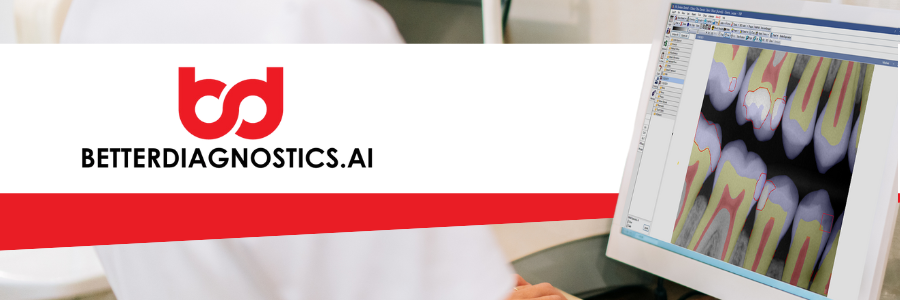

BetterDiagnostics is a third-party program that performs AI-generated radiograph image analysis.
BetterDiagnostics AI diagnostics is natively integrated in the Open Dental Imaging Module. This helps providers easily identify common dental pathologies for patients 18 and above. Filter AI annotations by pathology to customize your viewing experience. Learn more at BetterDiagnostics.ai.
To begin using BetterDiagnostics, sign up in the Open Dental Signup Portal. Billing is handled through Open Dental and will be viewable on your Open Dental account statement.
For pricing, see Fees for Support and Services, AI Imaging Analysis.
When an image is taken or stored in the Open Dental Imaging Module, the image is processed by BetterDiagnostics.
View layers, annotations, and detections as you review patient images.

BetterDiagnostics AI is a healthcare technology company focused on delivering affordable, accessible, and highly accurate AI-powered diagnostics and automation tools for dental practices. Our FDA and Canada health cleared solutions help clinicians detect oral diseases from radiographs, automate clinical documentation, and improve front-desk operations.